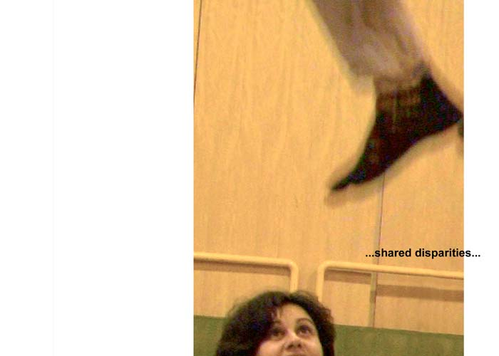

	<div id="oneCol" class="row">
    <div class="large-12 columns">
        <div class="medium-10 medium-offset-1 end columns">
    <h3>Shared Disparities</h3>
    <p>A study of the experience of autism from the point of view of teenagers between the ages of 12-19. A year collaboration with two Oxfordshire Special Units. The young people expressed themselves through images, audio, mark making and writing. Again a book was made. Our work was exhibited at Buckinghamshire and Chilterns University, part of the final Degree Show.</p>
		</div>
		<div class="center">
        <a href="shared001.html" title="View next Shared Disparities photograph"></a>


    <span class="links"><a href="shared001.html">next</a></span>
    </div>
    </div>
</div>

